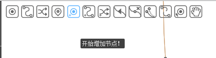
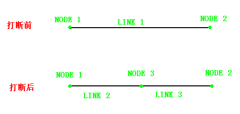
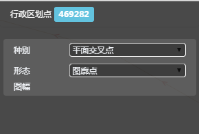
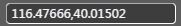
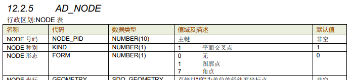

新增node


新增点
定义类型


选择行政区划点
制定位置

创建工具栏

map界面


空格保存
取消
生成数据
放弃新增


ESC



操作说明（行政区划场景下）：
1、选择新增点，新增点类型默认为：“行政区划点”，系统默认开启捕捉行政区划线
2、系统用蓝色十字 显示与行政区划LINK的捕捉点；
3、作业员在行政区划LINK上点击左键创建行政区划NODE；
4、系统根据作业员点击位置用 虚拟显示新NODE；
5、作业员按空格键，完成新行政区划NODE创建；
6、系统保存本次操作，并给新NODE赋上默认属性，用蓝色高亮圆点显示新NODE几何位置；
7、新增下一根道路线（从第4步开始）
取消当前node的新增：
1、点击其他工具按钮，结束当前动作，切换至其他动作
2、保存前，按键盘的“Esc”，回退至上一动作
3、点击属性栏取消，放弃当前新增动作
实时控制：
1、创建node必须捕捉到ADlink上
2、该位置已有节点,同一坐标不能有两个节点；
3、不能在自相交面上创建背景node
4、link长度应大于2米
5、此link不是该组同一关系中的主要素，不能进行修形操作
业务说明：
1、几何处理规则：打断后，原始LINK1删除；创建两条新的LINK（LINK2，LINK3）。新LINK的几何继承原始LINK的几何，并在打断处截断。即LINK2保留从NODE1到NODE3之间的几何；LINK3保留从NODE2到NODE3之间的几何；
2、属性处理规则：LINK2和LINK3都默认继承LINK1的属性。
3、子要素维护：
a) 形态：继承原始LINK。
4、形状区划LINK几何形状发生变化，行政区划FACE自动维护。
5、创建新NODE，会导致行政区划LINK被打断；
6、系统默认选择节点种别为 “平面交叉点”，节点形态为“无”；
7、系统在几何对象中算出新建NODE坐标；
8、新增Node,系统自动添加至少一条图幅号码记录；
9、同一关系维护：如果此Link为主要素，则与当前Link具有同一线的Link也做相应操作；如果此Link不为主要素，则不允许修形；

在线检查：
NODE移动
选中点
map展示

属性栏展示
移动NODE

空格保存
取消
生成数据
放弃修改


操作说明（行政区划场景下）：
1、点击选择工具栏中“选择点”，此时默认选择点类型为“AD-node”
2、map界面中左键选中AD-node；
3、点击编辑按钮
4、移动鼠标到节点的新位置，点击左键
5、空格保存
取消当前LINK的选中：
1、点中其他Link/点/icon/面时，切换至其他要素
2、按键盘的“Esc”键，退出当前node的选择
业务说明：
1、选中点属性栏展示，当前对象列出选中node类型及ID，属性栏列出选中node的属性卡片
2、移动node点，则node点上挂接的所有行政区划LINK都一起移动。即：行政区划LINK的其他形状点都不修改，只是把新node点位置赋给这些行政区划LINK；
3、移动行政区划NODE的坐标自动维护；
4、node点移动，行政区划LINK和行政区划FACE自动维护形状；
5、图廓点只能在图框线上移动。
6、当移动link的形状点出图框时，程序自动打断跨出图幅的线，图框线上自动生成图廓点；若将已构成面link的形状点移出图幅时，程序自动打断跨出图幅的线并切割面，原面和link的种别不变，线号和面号自动维护，并根据行政区划面的种别在图廓线上自动创建相应的假想线
7、同一关系维护：如果此node为主要素，与当前node具有同一关系的node也同步移动；如果此node不为主要素，则不允许移动；
8、移动node时，导致与其挂接的Link形状改变，组成面的link序号程序自动维护，维护原则：从1开始，逆时针或者顺时针方向+1递增编号
实时控制：
1、该点是图廓点，只能在图廓线上
2、 此node不是该组同一关系中的主要素，不能进行移动操作
3、背景面不能自相交
4、link长度应大于2米
NODE删除
选中点
map展示

属性栏展示
删除NODE

弹出提示确认
删除数据
操作说明（行政区划场景下）：
1、点击选择工具栏中“选择点”，此时默认选择点类型为“AD-node”
2、map界面中左键选中AD-node；
3、点击属性栏删除按钮，触发确认提示（提示删除造成的影响）
4、确认后删除数据
取消当前LINK的删除：
1、点中其他Link/点/icon/面时，切换至其他要素
2、按键盘的“Esc”键，退出当前node的选择
业务说明：
1、删除Node信息后属性列表中的属性信息删除，地图上删除几何要素
2、删除Node信息相关的检查错误信息
3、 删除NODE时，提示删除NODE点挂接的LINK，所属的FACE及Feature
4、同一关系维护：
① 除该node外，同一点关系仅包含一个node，则删除node的同时，解除同一点信息。
② 除该node外，同一点关系还包含两个或更多的node，则： 如果此node为主要素，则将此node从同一关系中解除，从剩余的node中根据优先级选择一个主要素，同一点关系保留；如果此node不为主要素，则仅仅将此node从同一关系中解除，同一点关系保留；
